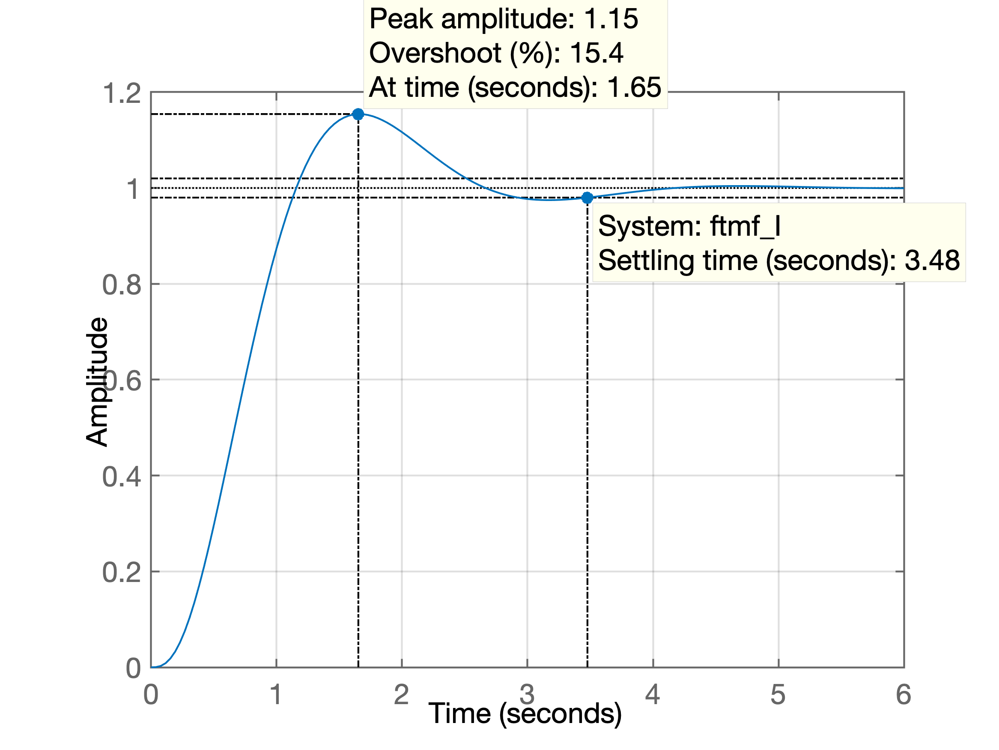

Projeto de PD
Arquivo:
aula_PD_03out2019.txt
Embasamento teórico --> Arquivo PDF: Root_Locus_Cap_9_parte_2_ptbr.pdf
Exemplo_1
Planta:
Controlador PD, formato genérico:
ou seu formato genérico:
Dúvida: onde alocar o zero do PD !? Opções:
- Zero em ;
- Zero em ;
- Zero em .
Avaliando as opções:
xxxxxxxxxx321>> % entrando com a planta2>> G=tf(1, poly( [-1 -2 -5] ) );3>> zpk(G)45 16 -----------------7 (s+5) (s+2) (s+1)89Continuous-time zero/pole/gain model.1011>> % Ingressando com PDs12>> PD1=tf([1 2],1)1314PD1 =15 s + 21617Continuous-time transfer function.1819>> PD2=tf([1 3],1);20>> PD3=tf([1 4],1);21>> PD4=tf([1 7],1);22>> ftma_PD1=PD1*G;23>> ftma_PD2=PD2*G;24>> ftma_PD3=PD3*G;25>> ftma_PD4=PD4*G;26>> ftma=G; % Puro controlador proporcional27>> subplot(2,2,1); rlocus(ftma); 28>> sgrid(0.4, 0)29>> subplot(2,2,2); rlocus(ftma_PD1); sgrid(0.4, 0)30>> subplot(2,2,3); rlocus(ftma_PD2); sgrid(0.4, 0)31>> subplot(2,2,4); rlocus(ftma_PD3); sgrid(0.4, 0)32% [compara_PDs.png](RL para as diferentes opções:

Exemplo_2
Seja a planta:
Note que já é uma planta, sistema do tipo 1 (com um integrador), o que já garante erro nulo em regime permanente para entrada degrau.
O objetivo é projetar um PD capaz de: e reduzir em em comparação à um controlador proporcional.
Solução:
xxxxxxxxxx351>> % Iniciando pelo projeto do Controlador Proporcional2>> G=tf(1,poly([0 -4 -6]));3>>zpk(G)45ans =67 18 -------------9 s (s+6) (s+4)1011Continuous-time zero/pole/gain model.1213>> OS=16; % $\%OS \le 16\%$14>> zeta=(-log(OS/100))/(sqrt(pi*pi+(log(OS/100))^2))15zeta =16 0.503917>> % Sintonizando o Integrador, para descobrir ts18>> ftma_I=G;19>> figure; rlocus(ftma_I)20>> hold on;21>> sgrid(zeta,0)22>> [K_I,polosMF]=rlocfind(ftma_I)23Select a point in the graphics window24selected_point =25 -1.1912 + 2.0793i26K_I =27 43.875328polosMF =29 -7.6022 + 0.0000i30 -1.1989 + 2.0818i31 -1.1989 - 2.0818i32>> % RL saldo como: RL_Integrador_exemplo_PD.png33>> % [RL_Integrador_exemplo_PD.png](RL_Integrador_exemplo_PD.png)34% fechando a malha para descobrir ts35ftmf_I=feedback(K_I*RL para o Integrador:

Fechando malha do Integrador para descobrir original:
xxxxxxxxxx51>> % fechando a malha para descobrir ts2>> ftmf_I=feedback(K_I*ftma_I, 1);3>> figure; step(ftmf_I)4>> grid5>> % Gráfico salvo como: step_integrador_exemplo_PD.png
Finalmente se descobre que:
xxxxxxxxxx51>> ts=3.48;2>> ts_d=3.5/33>> ts_d =4 1.16675>> save planta_PD % opcionalControlador PD, formato genérico:
ou seu formato genérico:
Incóginita: -- onde posicionar o zero deste controlador?
Resposta: usar contribuição angular.
Método manual:
xxxxxxxxxx911>> sigma=4/ts_d2sigma =3 3.42864>> wn=4/(zeta*ts_d)5wn =6 6.80457>> wd=wn*sqrt(1-zeta^2)8wd =9 5.877610>> polos_MFd=[-sigma+i*wd -sigma-i*wd]11polos_MFd =12 -3.4286 + 5.8776i -3.4286 - 5.8776i13>> % verificando onde os pólos desejados de MF se14>> % encontraram no plano-s15>> figure; rlocus(ftma_I);16>> hold on;17>> sgrid(zeta,wn)18>> plot(polos_MFd, 'b+');19>> plot(polos_MFd, 'b+', 'MarkerSize',18);20>> th_p1=atan2(wd,-sigma)21th_p1 =22 2.098923>> th_p1*180/pi % resposta em graus (e não em radianos)24ans =25 120.256226>> th_p2 = atan2(wd,4 - sigma)27th_p2 =28 1.473929>> th_p2*180/pi30ans =31 84.447132>> th_p3 = atan2(wd,6 - sigma)33th_p3 =34 1.158435>> th_p3*180/pi36ans =37 66.370838>> sum_th_p=th_p1+th_p2+th_p339sum_th_p =40 4.731141>> sum_th_p*180/pi42ans =43 271.074144>> th_z = sum_th_p - pi45th_z =46 1.589547>> th_z*180/pi48ans =49 91.074150>> zero = sigma - wd/tan(th_z)51zero =52 3.538853>> PD=tf([1 zero], 1)5455PD =5657 s + 3.5395859Continuous-time transfer function.6061>> ftma_PD=PD*ftma_I;62>> zpk(ftma_PD)6364ans =6566 (s+3.539)67-------------68 s (s+6) (s+4)6970Continuous-time zero/pole/gain model.7172>> figure; rlocus(ftma_PD)73>> hold on74>> sgrid(zeta,wn)75>> plot(polos_MFd, 'b+', 'MarkerSize',18, 'LineWidth', 3);76>> [K_PD,polosMF]=rlocfind(ftma_PD)77Select a point in the graphics window78selected_point =79 -3.3102 + 5.6431i80K_PD =81 41.168682polosMF =83 -3.2936 + 5.6427i84 -3.2936 - 5.6427i85 -3.4128 + 0.0000i86>> ftmf_PD=feedback(K_PD*ftma_PD, 1);87>> figure;88>> step(ftmf_PD)89>> % Gráfico da resposta salvo como: step_PD.png90>> % Gráfico do RL do PD salvo como: RL_PD.png91>> save planta_PDRL final:
Resposta ao degrau unitário:
Usando script
Usando rotina desenvolvida para Matlab: find_polo_zero.m :
xxxxxxxxxx371>> help find_polo_zero2 find_polo_zero.m3 4 Rotina de contribuição angular para descobrir onde5 localizar pólo ou zero dependendo do local desejado para6 os pólos de MF7 8 Uso:9 Esta rotina já espera uma tf de nome "ftma_aux"10 onde: ftma_aux(s)=C(s)*G(s);11 e onde: C(s) está parcialmente fornecido, ou já contendo12 zero(s) ou já contendo pólo(s)13 14 A rotina pergunta durante a execução se a idéia é15 determinar o local de um zero ou de um pólo16 17 Fernando Passold, em 14/10/2020, 20/10/20201819>> ftma_aux=G;20>> find_polo_zero21Overshoot desejado (em %): ? 1622ts_d (desired settling time): ? 1.166723Pólos (desejados) de MF em: s = -3.42847 \pm j 5.8774324Calculando ângulos dos Pólos:25 Pólo 1 em s= 0 --> Ângulo: 120.256^o26 Pólo 2 em s= -6 --> Ângulo: 66.3694^o27 Pólo 3 em s= -4 --> Ângulo: 84.446^o28Soma ângulos dos pólos: 271.072^o2930Calculando ângulos dos Zeros:31Soma ângulos dos zeros: 0^o3233Determinar: [p]=pólo ou [z]=zero do controlador: ? z3435Ângulo do zero do controlador: 91.0716^o36O zero do controlador deve estar em s = -3.3185437>> | Contribuição angular | RL final |
|---|---|
 |
Finalizando sintonia deste controlador (falta ganho):
xxxxxxxxxx371>> % Note que variável ftma já contem ftma_aux + zero calculado:2>> zpk(ftma)34ans =5 6 (s+3.319)7 -------------8 s (s+6) (s+4)9 10Continuous-time zero/pole/gain model.1112>> [K_PD, polosMF] = rlocfind(ftma) % sobre a 2a-figura gerada antes13Select a point in the graphics window14selected_point =15 -3.4408 + 5.9535i16K_PD =17 44.746618polosMF =19 -3.4263 + 5.9531i20 -3.4263 - 5.9531i21 -3.1475 + 0.0000i22>> % fechando malha e avaliando resposta ao degrau unitário23>> ftmf_PD=feedback(K_PD*ftma, 1);24>> figure; step(ftmf_PD)25>> stepinfo(ftmf_PD)26ans = 27 struct with fields:2829 RiseTime: 0.248730 SettlingTime: 1.185431 SettlingMin: 0.902832 SettlingMax: 1.140133 Overshoot: 14.012134 Undershoot: 035 Peak: 1.140136 PeakTime: 0.537637>> Resposta ao degrau unitário para este PD:

Comparando controladores
xxxxxxxxxx171>> figure; step(ftmf_I, ftmf_PD)2>> % Gráfico salvo como: comparando_step_I_PD.png3>> % [comparando_step_I_PD.png](comparando_step_I_PD.png)4>> format compact5>> zpk(ftma_I)67ans =89 110-------------11 s (s+6) (s+4)1213Continuous-time zero/pole/gain model.1415>> % Encerrando atividades no Matlab:16>> save planta_PD17>> diary offFernando Passold